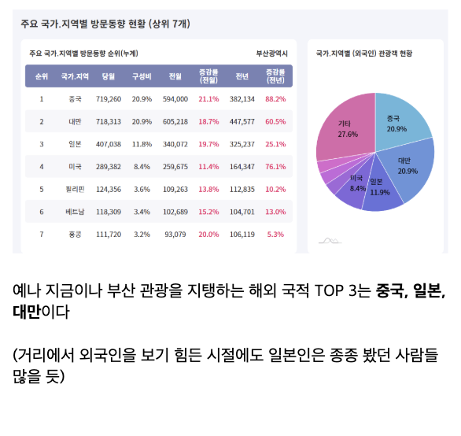
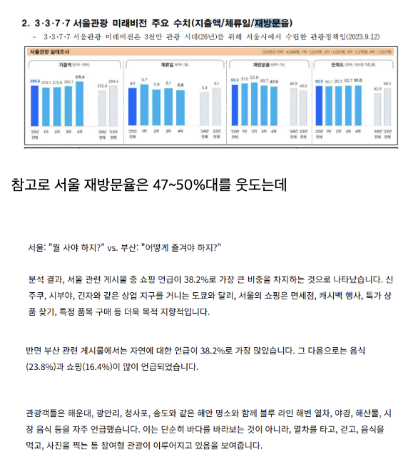
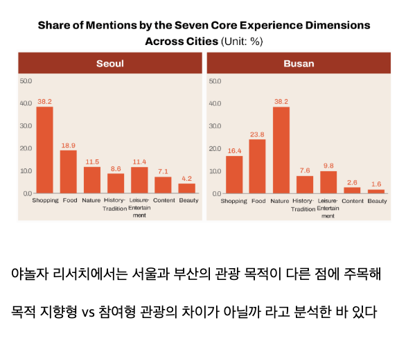
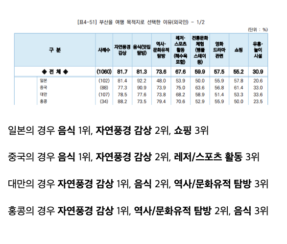
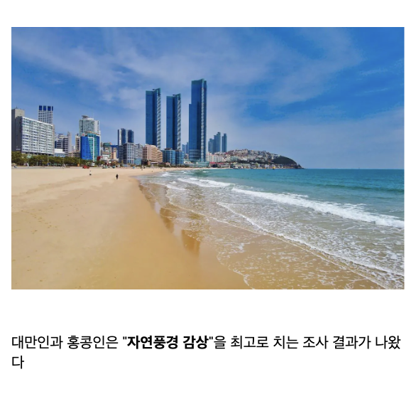
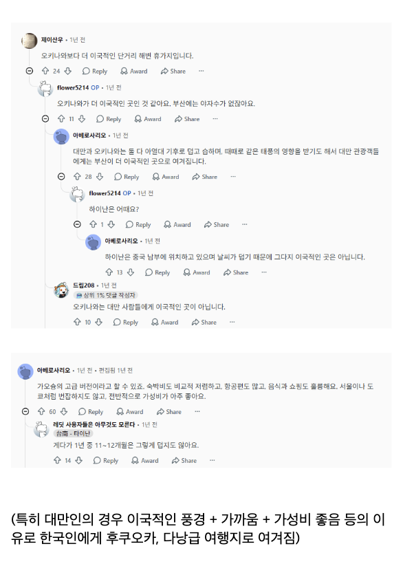

나도 성격상 일자리만 아니면 지방광역시가 서울보다 편한거 같음
난 서울태생인데 일자리만아니면 도시급인 지방 살아보고싶던데ㅋㅋ 넘숨막힘;
나도 부산 안 살지만 부산 갈 때마다 충격이긴 해. 유럽마냥 산쪽에 지어진 주택들, 바닷가에 지어진 고층 아파트 등등 교통은 정말 이런 곳이 있나 싶은 생각이 들긴 하지만 풍경에 특색이 있음
부산가서 되게 독특했던 것 중 하나가 2호선이 다 이어져서 순환선이 되지 못한 채 3호선으로 갈무리되어있는 게 특이하더라
일본관광객들도 많은이유가 우리가 후쿠오카가는거랑 비슷한이유임
한국인은 제주도만가도 와 야자수가 있네 씨봉방거 하는데 아래국가는 지겹게 널린게 야자
서면 ㄹㅇ 똥통이지 ㅋㅋㅋㅋㅋㅋㅋㅋ며칠건에 서면 xx국밥 지나가는데 똥냄새 ㅈㄴ 심하게 남
용궁사 가보고싶긴해
ㅋㅋㅋㅋ 불교 테마파크임. 절이라고 보기가 힘든 정도임. 특이점이라면 그 앞에 짜장면집은 괜찮더만
게임에 나왔다던데, 함 보고 오버워치 켜보는거지 뭐ㅋㅋ
그 짜장면집까지가 용궁사템플릿임ㅋ
ㄹㅇㅋㅋㅋ
최근 가봤는데 용궁사는 중국 대만 동남아 불교 요소들 다 넣어 놨던데 ㅋㅋ
거 갓다가 옆에 오랑대가서 바람쐬면 좋음
너무 복작거려
부산 아니면 서울인데 서울은 인천공항이 입지적으로 존나 불편해서 부산이 더 편해
광안리 해운대같이 인구 100만이상 도시에 이런 해변가는 잘없었음
서면 악취는 뭐가 문제인거임?
노포경인가봄
걍 길거리가 더러워. 음식점이나 술집들 쓰레기들을 밖에 내놓는데 수거 시간이 있다보니 미관상으로 안 좋긴함.
거기다 시민들 불법투기도 만연하고
근래 감천문화마을 80퍼센트가 외국인이야
판팡이랑 거주는 다른 거니까...
나도 부산 판팡 가는 건 좋았어
지금 부산 여행중인데 운전매너만 좀 발달되면 좋을듯 횡단보도 건너는데 어떤 여자분 우회전하는 차량에 치일뻔하고 좁은 골목길에도 속도내면서 지나가는 차 땜에 지나가는 사람들 다 놀람 ㅠ 전체적으로 과격하게 운전하는 사람들이 넘 많아
이렇게보니까 부산약간 골드코스트느낌나네
남포동에 일본인들 많더라
부산은 한국 다른동네 사는 사람이 가면 더 재밌음. 남자 혼자 덜렁 가도 꼭 현지인 몇몇이 말 걸어서 말 트게 됨.
현대화된 도시+해변은 세계적으로도 찾기 어렵다. 아는 곳 있으면 말해보라.
현대화된 도시가 있으면 해변이 빠지고 해변이 있으면 도시가 없음.
최근에는 크루즈 여행을 많이옴. 잠시 부산 여행가서 북항 앞에서 지내는데 매일 새로운 크루즈쉽이 1~2대씩 옴.
그럼 못해도 거의 매일 새로운 관광객이 3000~4000명씩 오는 꼴임. 이것만 해도 1년에 거의 백만명임.
그리고 공항이 도시에서 길어야 1시간 거리임. 김해공항에서 택시타면 광안리 해운대까지 딱히 길 안막히면 30~40분 거리임.
추가로 1시간 거리에 무려 경주가 있다. 그리고 거제 통영 등 남해 바다 경관을 볼 수 있는 곳도 있음
여기 관광지들 당일치기 관광 코스도 준비되어 있음. 벤타고 막 다닌거 많이 보여.
먹는것은 서울과 크게 다르지 않다고 생각하는데, 그래도 나름 부산만의 음식은 있어서 괜찮음. 싱싱한 해산물도 있고.
아무튼 여러모로 부산이라는 도시는 관광과 거주에서 상당히 좋은 도시가 맞음.
개인적으로 부산 출신이라서 서울 보다 살기 좋은 곳으로 평가함
리오데자네이루
상하이 시드니 샌프란시스코 바르셀로나 후쿠오카 도쿄?
시드니, 골드코스트,마이애미,바르셀로나,다낭
오사카랑 도쿄도 해안 도시임.. 뉴욕도.
현대화된 도시+해변은 세계적으로도 찾기 어렵다. 아는 곳 있으면 말해보라.
현대화된 도시가 있으면 해변이 빠지고 해변이 있으면 도시가 없음.
이건 진짜 너무 개소리긴하네
잘 정비된 해수욕장을 갖춘곳은 손에 꼽음 위에 있는 도시들이 광안리 해운대 같은 퀄리티의 해수욕장은 없다고 보면 됨
미안 내가 말을 좀 비약적으로 했네
말그대로 해변과 현대적 도시가 하나의 뷰로 보이는 곳을 의미한거다
그리고 '없다'는 말 보다는 '잘 없다'가 더 의도한거지
대항해시대 게이머들이 우후죽순 댓글 달 듯
왜냐면 바다랑 가까운 대도시는 죄다 인공섬 항만개발해서 해변이 별로없음 ㅠ
중국 내륙은 그럴수있는데
홍콩 대만 일본.여기는 부산이 가진거 다 갖고 있는 나라 아니냐..?
바다 산이 인접해있잖아.
그냥 함 예상해보면 한국인데 바닷가끼고있는 한국대도시라서 + 요새 핫한 경주랑 가까운 접근성좋은 대도시라서?
한국인 기준으로도 국내 여행지 만족도 탑은 부산임 ㄹㅇ
오키나와 가는 대만 관광객 많을텐데 가깝기도하고...
대만은 타이베이에서 가오슝까지 고속철도 깔린 지역 아니면 사는 사람이 없어서 그렇지 쟤네도 섬나라라 해안가 풍경 이쁜 편이고
오키나와는 미야코지마, 케라마 제도 등 물 진짜 맑고 이쁜 스팟이 많았는데 음식은 뭐 그렇다.. 식도락으론 별로였음.
그쪽은 바다끼고 채식함 ㅋㅋㅋㅋ야끼니꾸먹으러가는곳
오사카포지션이긴함
외국인들도 쓰까 먹는걸 좋아하나 보군
부산에서 경주로 자연스럽게 넘어가지나 보더라
황리단길 존나 이쁨
신라시절 2층목조 건축들 재현 해둔게 뽕 존나 참
그보다 다시 부산에 돌아가고싶다...
진짜 일자리가 없어 부산은 ㅠㅠ
부산에 외국인이 얼마나 많냐면 일하는데 여행온 외국인을 볼 일이 없었는데 요샌 거의 매일 보임
부산 남포가면 일본사람들 많이 보였는데 요샌 대만사람도 많이 가나봄
후, 일자리 없어서 상경했는데 진짜 다시 부산 돌아가고 싶다.